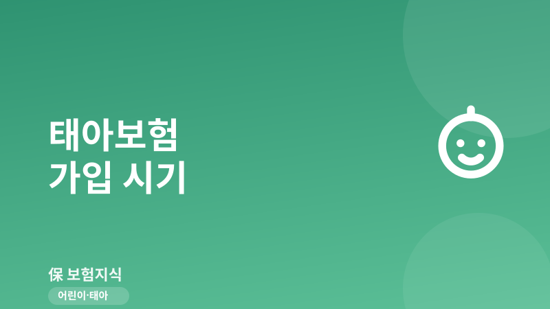
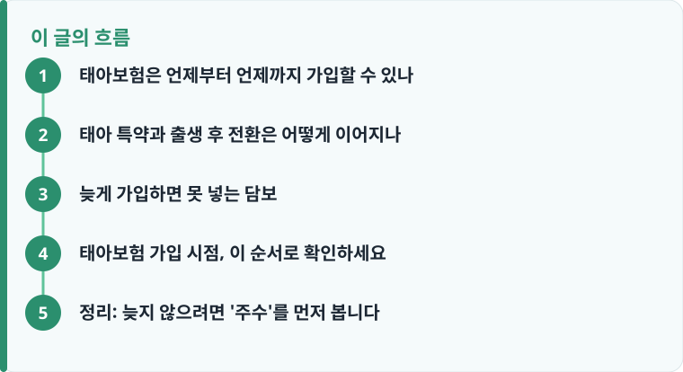

태아보험은 임신 확인 후 가입 가능하며, 태아 특약은 보통 임신 22주 전후까지만 넣을 수 있어 시기를 놓치면 보장 설계가 크게 달라집니다.
태아 특약을 붙인 계약은 출생과 동시에 어린이보험으로 자동 전환되며, 전환 이후에는 태아 시기에만 넣던 담보를 추가할 수 없습니다.
선천이상 수술비·저체중아 입원비처럼 출생 전 계약해야만 담보되는 항목은 늦게 가입하면 아예 선택지에서 사라질 수 있습니다.
태아보험은 언제부터 언제까지 가입할 수 있나
태아보험은 정확히 말하면 태아를 피보험자로 하는 독립 상품이 아니라, 어린이보험에 '태아 특약'을 얹어 임신 기간부터 보장을 시작하는 구조입니다. 그래서 가입 시점이 두 방향으로 정해져 있습니다. 시작 시점은 병원에서 임신이 확인되고 초음파로 심장 박동 등이 확인된 이후이며, 대개 임신 초기부터 청약이 가능합니다. 반대로 마감 시점은 상품마다 다르지만 흔히 임신 22주 전후를 기준으로 잡는 경우가 많고, 일부는 그보다 이르거나 늦게 설정되기도 합니다.
왜 하필 22주 전후일까요. 임신 중기를 넘어가면 정밀 초음파와 각종 산전 검사로 태아의 상태가 상당 부분 드러나기 때문에, 보험사 입장에서는 이미 확인된 위험을 그대로 인수하기 어려워집니다. 그래서 태아 관련 특약은 위험이 구체화되기 전인 임신 중기 이전으로 가입 창을 제한합니다. 즉 '임신을 확인했으니 여유 있게 알아보자'는 생각으로 미루다 보면, 정작 태아 담보를 넣을 수 있는 기간이 이미 지나 있을 수 있습니다. 어린이보험 전체 구조가 낯설다면 어린이보험 기본 구조를 먼저 훑어보면 태아 특약의 위치가 눈에 들어옵니다.
실제로 가입 창은 상품마다 조금씩 다릅니다. 어떤 상품은 임신 16주까지, 어떤 상품은 22주, 드물게 25주 안팎까지 청약을 받기도 합니다. 그래서 '22주'라는 숫자를 절대 기준처럼 외우기보다는, 검토 중인 상품의 마감 주수를 개별적으로 확인하는 태도가 안전합니다. 또한 같은 상품 안에서도 태아 특약별로 가입 가능 주수가 다르게 설정된 경우가 있어, 특정 담보만 앞선 주수에서 마감되는 일도 있습니다. 임신 초기에 대략적인 상품 후보를 정해 두고, 초음파로 임신이 안정적으로 확인되는 시점에 곧바로 청약으로 넘어가는 흐름이 시기를 놓치지 않는 가장 현실적인 방법입니다.
태아 특약과 출생 후 전환은 어떻게 이어지나
태아보험의 핵심은 '한 계약이 두 단계를 산다'는 점입니다. 임신 기간에는 태아를 대상으로 한 특약이 작동하고, 아이가 태어나면 같은 계약이 자동으로 어린이보험 본계약으로 전환됩니다. 새로 가입 절차를 밟는 것이 아니라, 출생신고 정보를 보험사에 알리고 피보험자를 태아에서 출생아로 확정하는 방식입니다. 이때 임신 중에 설계해 둔 입원·수술·실손 등 기본 담보가 그대로 아이의 보장으로 이어집니다.
여기서 중요한 것은 태아 시기에만 넣을 수 있는 특약과, 출생 이후에도 유지·추가할 수 있는 담보가 나뉜다는 사실입니다. 저체중아 육아비, 선천이상 관련 수술비, 출생 전후 질환 입원비처럼 '태어나는 과정'과 직접 연결된 담보는 태아 특약으로만 붙일 수 있습니다. 반면 일반적인 질병·상해 입원, 골절, 실손 같은 담보는 출생 후에도 조정 여지가 있습니다. 그래서 가입 시점에 태아 특약을 어떻게 짜 두느냐가, 아이가 자란 뒤 보장 공백으로 남을지 아닐지를 가릅니다. 결혼과 출산 시기에 맞춘 가족 보장 설계가 궁금하다면 신혼부부 보험 가이드에서 준비 순서를 함께 정리해 두면 좋습니다.

늦게 가입하면 못 넣는 담보
태아보험을 서두르라고 말하는 이유는 단순히 보험료 문제가 아니라, 시기를 놓치면 '선택 자체가 불가능'해지는 담보가 있기 때문입니다. 대표적으로 선천이상 관련 수술·진단 담보는 임신 중 특정 주수 이전에 가입한 계약에만 붙습니다. 이미 정밀 검사로 이상 소견이 확인된 뒤에는 해당 담보의 인수가 거절되거나, 부담보(특정 부위·질환을 보장에서 제외) 조건이 붙을 수 있습니다.
또한 저체중아 입원·육아비, 미숙아 관련 담보처럼 출산 상황과 직결된 항목은 출생 후에는 아예 추가할 수 없습니다. 태아 특약을 넣지 않은 채 아이가 태어나면, 이후 어린이보험에 신규 가입하더라도 이런 출생 연계 담보는 대상에서 빠지게 됩니다. 여기에 더해, 태아보험도 일반 보험처럼 가입 후 일정 기간의 면책·감액 조건이 적용될 수 있으므로 '언제 가입했는지'와 '언제부터 온전히 보장되는지'를 함께 봐야 합니다. 면책 90일, 초기 감액 같은 개념이 헷갈린다면 보장·면책·감액기간 안내를 참고하면 시점 계산이 쉬워집니다.
정리하면 태아보험에서 '늦었다'는 말은 두 가지 상황을 뜻합니다. 하나는 마감 주수가 지나 태아 특약 자체를 넣지 못하는 경우이고, 다른 하나는 주수는 남았지만 검사 결과 이미 확인된 이상 때문에 특정 담보가 부담보로 빠지는 경우입니다. 두 상황 모두 시간이 지날수록 선택지가 좁아진다는 공통점이 있습니다. 그래서 태아보험은 다른 보험보다 '검토 기간'을 짧게 잡고 움직여야 하는 상품입니다. 담보 개수를 늘려 보험료를 키우는 것보다, 출생 연계 담보처럼 지금이 아니면 못 넣는 항목을 먼저 확보하고 나머지는 출생 후 조정한다는 우선순위가 실전에서는 더 효율적입니다.
작성·검수 기준
이 글은 특정 보험사의 태아보험 상품을 권유하기 위한 것이 아니라, 태아보험 가입 시점을 판단할 때 알아야 할 일반적인 기준을 설명하기 위해 작성했습니다. 가입 가능 주수(예: 22주 전후), 태아 특약의 종류, 출생 후 전환 절차, 면책·감액 조건은 가입 시점의 약관과 개별 상품에 따라 달라질 수 있습니다.
정확한 가입 가능 주수와 담보 범위는 본인이 검토하는 상품의 상품설명서·약관과 태아보험 기본 안내를 함께 확인하는 것이 가장 정확합니다.
태아보험 가입 시점, 이 순서로 확인하세요
가입을 늦지 않게 마치려면 임신을 확인한 직후부터 다음 순서로 움직이는 것이 안전합니다. 특히 마감 주수는 상품마다 다르므로, 청약 가능 기간을 가장 먼저 확인하는 것이 핵심입니다.
- 임신 확인 후 곧바로 현재 임신 주수를 기준으로 청약 가능 여부를 확인합니다.
- 검토 중인 상품의 태아 특약 마감 주수(흔히 22주 전후)를 상품설명서에서 확인합니다.
- 선천이상 수술비·저체중아 담보 등 '태아 시기에만 넣을 수 있는' 항목을 우선순위로 정리합니다.
- 출생 후 어린이보험으로 전환됐을 때 이어지는 기본 담보(실손·입원·수술)를 함께 설계합니다.
- 면책·감액 조건과 보험료 갱신 여부를 확인한 뒤 마감 주수 전에 최종 청약합니다.
정리: 늦지 않으려면 '주수'를 먼저 봅니다
태아보험은 '얼마짜리를 넣느냐'보다 '언제까지 넣을 수 있느냐'가 먼저인 상품입니다. 임신을 확인했다면 상품별 마감 주수를 가장 먼저 확인하고, 태아 시기에만 넣을 수 있는 담보를 놓치지 않는 것이 핵심입니다. 22주 전후라는 기준을 대략 기억해 두고, 그 전에 담보 우선순위와 출생 후 전환 구조까지 함께 설계하면 '나중에 넣으려니 안 된다'는 상황을 피할 수 있습니다.
다른 보험 정보 글이 궁금하다면 보험지식 블로그에서 이어 읽어 보세요. 가입 전에는 반드시 약관과 상품설명서를 확인하는 것이 가장 안전한 방법입니다.